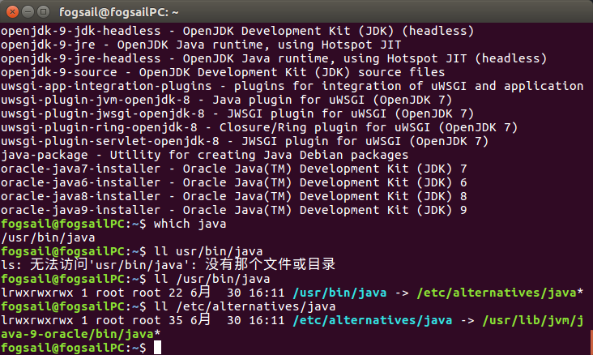
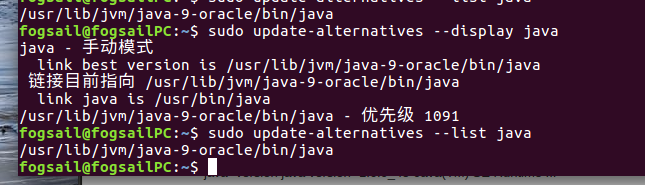

Linux的核心是shell，这里先简单阐述一下基本的shell编程的概念。
Linux系统中安装java
安装python依赖包
1
2
| sudo apt-get install python-software
sudo apt-get install software-properties-common
|
添加ppa源
1
2
3
4
5
| sudo add-apt-repository ppa:webupd8team/java
sudo apt-get update
sudo apt-get install oracle-j +按两次TAB
sudo apt-get install oracle-java9-installer
sudo apt-get install oracle-java9-set-default
|
查看java安装位置
1
2
3
4
5
6
7
8
9
10
11
| apt-cache search openjdk
apt-file list java
whereis java
which java
ll /usr/bin/java
ll /etc/alternatives/java
|
如图所示：

获取java命令路径
1
| /usr/lib/jvm/java-9-oracle/bin/java
|
查看java其他版本
1
2
3
4
5
6
| sudo update-alternatives --install link(java_01版本的绝对路径) name(新命令名字) path(新命令java_02的路径) priority
sudo update-alternatives --install /usr/bin/java java XXX/XXX 300
sudo update-alternatives --remove java XXX/XXX(即为上一步中的name path)
|

1
2
| sudo update-alternatives --config java
sudo update-alternatives --config javac
|
环境变量的配置
1
2
3
4
5
6
7
8
9
10
11
|
sudo gedit ~/.bashrc
export JAVA_HOME=/usr/lib/jvm/java-9-oracle
export JRE_HOME=${JAVA_HOME}/jre1.8.0_131
export CLASSPATH=.:${JAVA_HOME}/lib:${JRE_HOME}/lib
export PATH=$PATH:${JAVA_HOME}/bin:${JRE_HOME}/bin
sources ~/.bashrc
|
 微信
微信 支付宝
支付宝